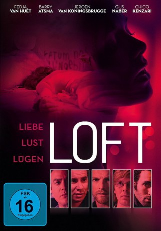

#3199 Loft - Liebe, Lust, Lügen
Alternativ: Loft
 
 IMDB-Wertung: 6.9 / 10
IMDB-Wertung: 6.9 / 10  Metascore: 0
Metascore: 0 
Der Erotik-Thriller LOFT, einer der größten Kinoerfolge aus den Niederlanden, erzählt die spannende Story, wie ein gefährliches Spiel aus Liebe, Lust und Lügen ein fatales Verbrechen auslöst. Ein gut gehütetes Geheimnis verbindet die fünf Freunde Matthias, Rob, Willem, Bart und Tom: Gemeinsam besitzen sie ein exklusives Loft in Amsterdam, wo sie ihren außerehelichen sexuellen Phantasien nachgehen können. Als dort eines Tages eine gefesselte Frauenleiche entdeckt wird, droht die Freundschaft zu zerbrechen. Denn nur einer von ihnen kann der Täter sein, weil es keine anderen Schlüssel zu dem Appartement gibt. Plötzlich erkennen die Freunde, wie wenig sie voneinander wissen. Und da die Polizei ermittelt, stehen auch ihre Ehen auf dem Spiel. Rückblenden und Verhörszenen steigern sich im Wechsel bis zum überraschenden Ende ...
Jahr: 2010
Dauer: 111 Minuten
FSK:
Land: Niederlande Studio: Schröder MediaTonspuren:
Untertitel:
Auflösung: 1080p (1920x816) Größe: 6051 MB
Genre: Thriller, Drama, Krimi
Regisseur: Antoinette Beumer
Drehbuch: Bart De Pauw, Saskia Noort
Soundtrack: Wolfram de Marco
Darsteller:
- Fedja van Huêt als Bart Fenneker
 Barry Atsma als Matthias Stevens
Barry Atsma als Matthias Stevens- Jeroen van Koningsbrugge als Willem van Eijk
 Marwan Kenzari als Tom Fenneker
Marwan Kenzari als Tom Fenneker- Anna Drijver als Ann Marai
- Kim van Kooten als Nathalie Stevens
- Hadewych Minis als Eva Fenneker
- Katja Herbers als Marjolein Hartman
 Carolien Spoor als Kimmy Fenneker-de Nijs
Carolien Spoor als Kimmy Fenneker-de Nijs- Renée Fokker als Vrouwelijke ondervrager
 Raymond Thiry als Mannelijke ondervrager
Raymond Thiry als Mannelijke ondervrager- Gijs Naber als Robert Hartman
 Sallie Harmsen als Sarah Lunter
Sallie Harmsen als Sarah Lunter- Lies Visschedijk als Annette van Eijk
- Charlie Chan Dagelet als Linda Fenneker
- Renee Fokker als Vrouwelijke ondervrager
- Tom Jansen als Anton de Nijs
- Rik Launspach als Wethouder Roijers
- Esmée van Kampen als Anja
- Paloma Aguilera Valdebenito als Hoertje
- Arnost Kraus als Man op benefietavond
- Marja de Leeuw als Katherine de Nijs
- Petra van Delden als Mevrouw Roijers
- Amanda Smits als Tom's girl , uncredited
- Sabine Soetanto als (uncredited
- Dani Stauder als Café Guest , uncredited
- Maxim van Someren als Cousin , uncredited
Datei: X:\3-Trilogie(G-M)\Loft\Loft - Liebe, Lust, Lügen (2010, FSK, 1920x816).mkv seit 12.02.2016
Festplatte: HD Collection-2(A-Z)-3(A-M)
 Alle Filme aus Gruppe '3-Trilogie(G-M)\Loft'
Alle Filme aus Gruppe '3-Trilogie(G-M)\Loft'